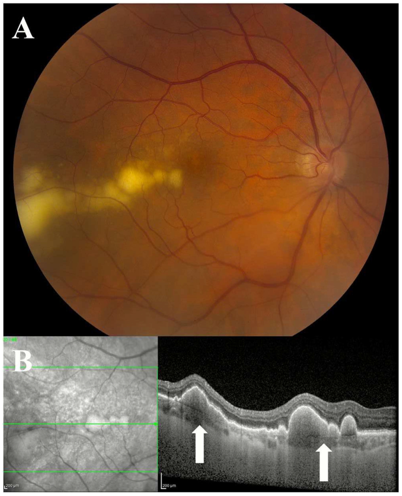
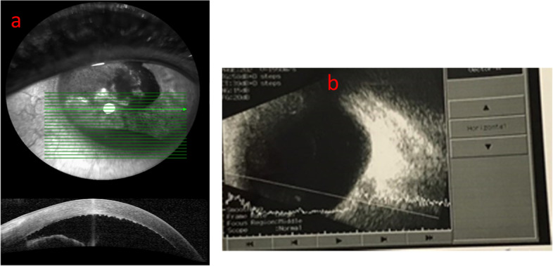
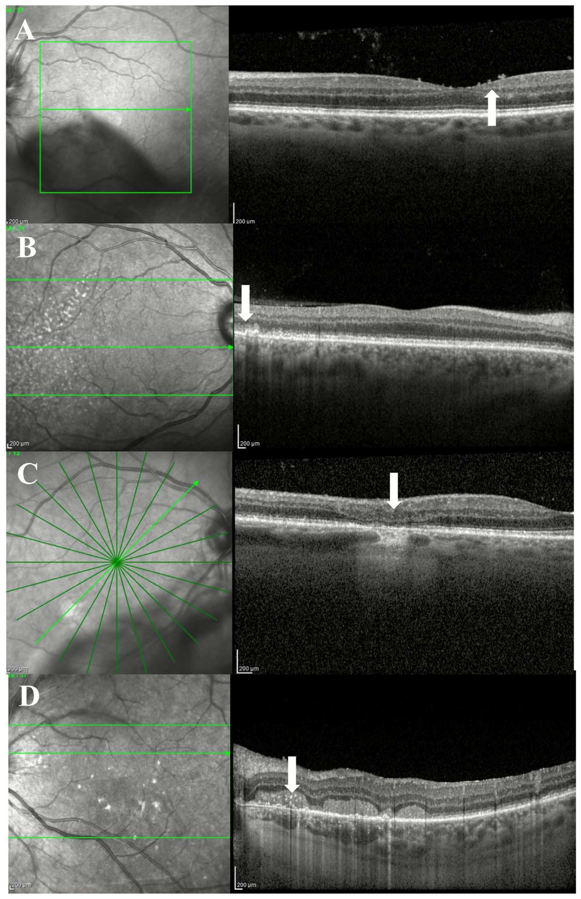
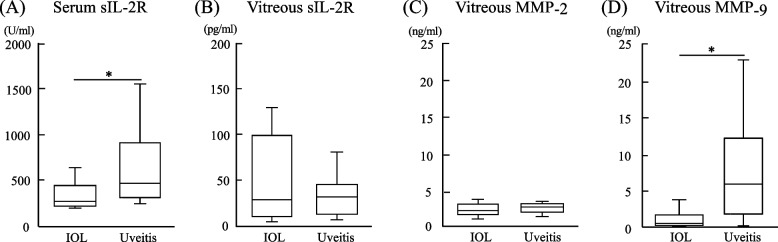
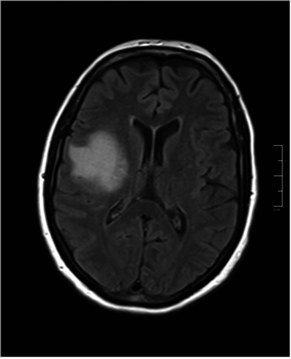

1435 — Hội chứng masquerade nội nhãn: u lympho nội nhãn giả viêm màng bồ đào / Intraocular lymphoma masquerading as uveitis
Tags: pattern:viem-mang-bao-dau pattern:viet-duoi-rpe pattern:te-bao-dich-kinh pattern:pseudohypopyon pattern:u-lympho pattern:thamn-nhiem-hac-mac pattern:hoang-diem-khong-dap-ung vung:mat vung:dich-kinh vung:vong-mac vung:mong-mat vung:hac-mac vung:tien-phong protocol:OCT protocol:FAF protocol:FA protocol:ICGA protocol:UBM protocol:B-scan protocol:sinh-thiet-dich-kinh protocol:MRI-so-nao score:ISOLD score:IL-10-IL-6
Mức chắc chắn (certainty): tổng hợp y văn (literature synthesis) — số liệu lấy từ 2 tổng quan có hệ thống/tổng quan ảnh học, 1 phân tích dân số SEER, 1 đoàn hệ thực hành, 1 ca nguyên văn, và các nghiên cứu cytokine. Không có RCT cho chẩn đoán u lympho nội nhãn; phần ngưỡng cytokine là tổng hợp từ nhiều đoàn hệ khác nhau (đã ghi rõ cỡ mẫu), không trộn thành một "chuẩn" duy nhất.
Vì sao bài này quan trọng: bài 1425/1426 vừa chốt viêm nội nhãn cấp và tái phát, 1433 chốt viêm nội nhãn trên mắt bơm dầu; nhưng bệnh nhân viêm màng bồ đào tái diễn, đã dùng corticoid mà vẫn xấu đi là nhóm mà mọi "kháng sinh + corticoid" đều thất bại vì chẩn đoán sai. Bỏ sót u lympho không chỉ làm mù mắt mà còn bỏ mất cửa sổ điều trị trước khi di căn não — trong khi 58% bệnh nhân sẽ có tổn thương hệ thần kinh trung ương (CNS) trong quá trình bệnh.
Sửa tiền đề của backlog (trung thực nguồn): backlog ghi "IL-10/IL-6 > 1" như một ngưỡng duy nhất. Y văn thực tế dùng ba cách khác nhau: ngưỡng tuyệt đối IL-10 (dịch kính 65 pg/mL, tiền phòng 30 pg/mL), tỉ lệ IL-10/IL-6 (dịch kính > 1, tiền phòng > 1,55), và điểm ISOLD (công thức logistic). Bài này trình bày cả ba, kèm AUC và cỡ mẫu, thay vì gộp thành một con số.
1. Tổng quan bệnh học – cơ chế hình ảnh – vì sao "viêm" mà không đáp ứng corticoid
- Bệnh học: đa số u lympho nội nhãn là u lympho tế bào B lớn lan tỏa (DLBCL); u lympho vùng rìa (MALT) chiếm phần lớn ở người < 60 tuổi và ở hắc mạc/thể mi (thể tiến triển chậm, tiên lượng tốt hơn). U lympho nội nhãn nguyên phát (PIOL/PVRL) được xem là một phần của u lympho hệ thần kinh trung ương nguyên phát (PCNSL): tế bào u "trú" trong mắt trước khi lan vào não.
- Dịch tễ định lượng: Mỹ 1995–2018: 0,245 ca/triệu dân/năm, sống tích lũy 5 năm 70,6%; SEER 1992–2018: 0,23/triệu, xu hướng tăng APC +2,35%/năm, 326 bệnh nhân, tuổi trung bình 66,1, 72,1% ≥ 60 tuổi; vị trí nguyên phát: dịch kính 68,7% · thể mi 20,2% · hắc mạc 7,4% · võng mạc 3,7%. Sống đặc hiệu bệnh 74,2% (5 năm) / 61,5% (10 năm); phẫu thuật, xạ trị và hóa trị không cải thiện sống trong mô hình SEER — nghĩa là chẩn đoán sớm mới là biến số can thiệp được.
- Vì sao chẩn đoán muộn: gộp 87 nghiên cứu / 1.484 bệnh nhân: 85% bị chẩn đoán muộn, 64% bị chẩn đoán nhầm; 19% đã có tổn thương CNS ngay lần đầu, 58% trong toàn bộ quá trình; thời gian từ triệu chứng đến chẩn đoán 6–40 tháng (đoàn hệ thực hành: trung vị 10,8 tháng, 57,1% từng được điều trị như viêm màng bồ đào, trong đó 9 ca corticoid toàn thân và 2 ca adalimumab).
- TẠI SAO tế bào u "biến mất" sau corticoid: corticoid gây ly giải lympho bào → mẫu dịch kính nghèo tế bào, tế bào dễ vỡ, thoái hóa nhanh (phải chuyển mẫu tươi, không cố định, đến phòng xét nghiệm ngay, dùng cell block). Đây là lý do dịch kính dương tính chỉ ~50% dù bệnh có thật, và lý do phải ngừng corticoid toàn thân ≥ 2 tuần trước lấy mẫu.
- TẠI SAO IL-10 phân biệt được: tế bào lympho B ác tính sản xuất IL-10 (yếu tố tăng trưởng tự tiết), còn IL-6 do tế bào viêm tiết ra. Vì vậy u lympho cho IL-10 cao + IL-6 thấp → tỉ lệ > 1, còn viêm màng bồ đào cho IL-6 cao → tỉ lệ < 1**. Ngưỡng tuyệt đối IL-10 cũng tách được: dịch kính **65 pg/mL** (Se **93%**, Sp **100%**), tiền phòng **30 pg/mL** (Se **78%**, Sp **97%**); tiền phòng **IL-10/IL-6 > 1,55 cho Se 94,1% / Sp 100%; gộp 87 nghiên cứu: IL-10/IL-6 > 1 là xét nghiệm có tỉ lệ dương cao nhất (93%), tiếp theo IL-10 > 50 pg/mL 88%, flow cytometry 88%, PCR IgH đơn dòng 85,1%, MYD88 L265P 70%, CD79B 35,09%.
- TẠI SAO ảnh OCT là chốt sàng lọc: OCT phân giải ~5–7 µm nên thấy được lắng đọng tăng phản hồi dưới biểu mô sắc tố (sub-RPE) — nơi tế bào u cư trú giữa RPE và màng Bruch — trong khi siêu âm B (phân giải ~100 µm) không thấy. Vì tế bào u nằm dưới RPE, tổn thương hiện trên ảnh màu là đốm vàng-kem "sâu" chứ không phải ổ viêm bông; trên FAF các đốm này tăng tự phát huỳnh quang do rối loạn chuyển hóa RPE; trên ICGA chúng chặn huỳnh quang (đốm giảm huỳnh quang).
- Ngưỡng định lượng cần nhớ: hạch dưới RPE 91% mắt VRL (loạt 182 mắt), dưới RPE ± dưới võng mạc = 85% ở lần khám đầu; lắng đọng trước võng mạc đặc hiệu 92,5% (tỉ lệ gặp 13–44,4%); lắng đọng trong võng mạc lan tỏa đặc hiệu 100%; đường tăng phản hồi dọc trong võng mạc (VHRL) thể đầy đủ/hỗn hợp đặc hiệu 100%; EZ đứt gãy 52,3–73,3%; thâm nhiễm hắc mạc trong gặp 97,5% ở viêm màng bồ đào vs 44,4% ở VRL (dùng để loại u lympho).
2. Mẫu hình + chẩn đoán phân biệt theo vị trí (Gamut)
Câu hỏi đầu tiên khi gặp "viêm màng bồ đào không đáp ứng corticoid": (1) tổn thương ở khoang nào? (2) có tổn thương dưới RPE/trong võng mạc không? (3) tế bào dịch kính kiểu gì? (4) có bất thường hắc mạc/thể mi/mống mắt không?
- A. Thể dịch kính–võng mạc (VRL, hay gặp nhất ~70%): tế bào dịch kính + lắng đọng dưới RPE; kiểu dịch kính "cực quang" (aurora borealis) — sợi mảnh xếp theo trục phát sáng — là đặc hiệu nhất, gặp ~1/3 mắt; kiểu "chuỗi ngọc" (string of pearls) không đặc hiệu (gặp cả sarcoid/nhiễm trùng); 90% mắt có một trong ba kiểu; thâm nhiễm dịch kính có thể là dấu hiệu duy nhất của tổn thương hậu đoạn ở 40% mắt. Thị lực có thể vẫn tốt dù dịch kính đục nhiều — ngược với viêm màng bồ đào (thường phù hoàng điểm, thị lực giảm rõ).
- B. Thể dưới RPE/võng mạc: đốm kem-vàng "sâu", có thể hợp thành hình da báo (leopard spot) — gặp 9–21%; tổn thương dưới võng mạc gặp tới 81% mắt.
- C. Thể tiền phòng/mống mắt (masquerade tiền phòng): giả mủ tiền phòng (pseudohypopyon), mống mắt phồng, KPs không dạng "mỡ cừu", không có viêm dịch kính trên B-scan; glôcôm thứ phát tới 29%; đây là thể dễ bị gọi là viêm màng bồ đào trước và dễ bị chọc hút tiền phòng nhiều lần.
- D. Thể thể mi: trên UBM — thâm nhiễm đặc, đồng nhất, phản hồi thấp, hình vòng 360° ("ring lymphoma"); khác melanoma thể mi ở không có khoang dịch, không "rỗng", bờ đều.
- E. Thể hắc mạc (choroidal lymphoma): thâm nhiễm vàng-trắng 100% mắt, dày hắc mạc lan tỏa 47,1%, nếp gấp hắc mạc 11,8%; OCT bề mặt hắc mạc phẳng (calm) / gợn sóng nhỏ (mini-wavy) / lượn sóng (maxi-wavy = "seasick") — calm ứng với u dày trung bình 1,7 mm, undulating ứng với 4,1 mm; B-scan phát hiện xâm lấn ngoài củng mạc ~76% mắt nhưng đo dày quá 66% so với EDI-OCT.
Gamut theo "một bên – tái phát – corticoid không cứu": u lympho, lao nội nhãn, giang mai, nhiễm virus (CMV/HSV/VZV), nấm nội sinh, sarcoidosis, bệnh Vogt–Koyanagi–Harada (thường hai bên), viêm màng bồ đào giao cảm, u hắc mạc (melanoma không sắc tố/di căn), u nguyên bào võng mạc ở trẻ, dị vật nội nhãn bỏ sót.
3. Bảng so sánh phân biệt (ma trận đối chiếu)
| Thực thể (entity) | Hình ảnh điển hình | Chốt vào (rule-in) | Chốt loại (rule-out) | Gợi ý xác nhận |
|---|---|---|---|---|
| U lympho dịch kính–võng mạc (VRL) | Tế bào dịch kính kiểu cực quang, đốm kem-vàng dưới RPE, OCT: lắng đọng tăng phản hồi dưới RPE + PED dạng vòm, VHRL | Đốm dưới RPE + tăng phản hồi dưới RPE trên OCT; IL-10/IL-6 > 1; VHRL đầy đủ/hỗn hợp (Sp 100%) | Thâm nhiễm hắc mạc trong 97,5% ở viêm → nếu thấy nhiều thì nghiêng viêm; thị lực rất kém + phù hoàng điểm nghiêng viêm | Cytology + IHC (CD19/CD20), flow cytometry, PCR IgH/IGK, IL-10/IL-6, MYD88 L265P |
| Viêm màng bồ đào sarcoidosis | Viêm dạng hạt, nốt Koeppe/Busacca, nang mống mắt, bạch mạch quanh mạch máu ("candle-wax dripping") | Tổn thương da/ hạch/ X-quang ngực + tăng ACE; IL-6 trội | Đốm dưới RPE lan tỏa + IL-10/IL-6 > 1 → loại sarcoid | CT ngực, ACE, sinh thiết hạch/da; cytokine dịch kính |
| Lao nội nhãn | Nốt lao hắc mạc, viêm mạch, dày hắc mạc | IGRA dương + tổn thương lao nơi khác, đáp ứng lao đồ | IL-10 rất cao + tế bào dị không điển hình → loại lao | IGRA, PCR lao, đáp ứng điều trị |
| Giang mai mắt | Viêm hắc võng mạc thể đám (placoid), viêm mạch, viêm thần kinh thị | Huyết thanh RPR/TPHA dương, đáp ứng penicillin | Đốt dưới RPE + tỉ lệ IL-10/IL-6 > 1 → loại giang mai | RPR/TPHA, HIV, đáp ứng điều trị |
| Viêm nội nhãn/áp-xe tiền phòng | Mủ tiền phòng thật, fibrin, viêm dịch kính trên B-scan, đau nhiều | Khởi phát cấp < 1 tuần sau can thiệp, cấy dương | Không đau, không viêm dịch kính, tái diễn nhiều tháng → loại nhiễm | Cấy/PCR thủy dịch–dịch kính; B-scan |
| U lympho hắc mạc | Thâm nhiễm vàng-trắng, hắc mạc lượn sóng "seasick", xâm lấn ngoài củng mạc | Bề mặt hắc mạc lượn sóng + dày > 4 mm; EDI-OCT thấy thâm nhiễm sâu | Melanoma: khối khu trú, vôi hóa, không "seasick" | EDI-OCT, B-scan, sinh thiết củng mạc/hắc mạc |
| U lympho thể mi | "Ring lymphoma" 360°, phản hồi thấp đồng nhất trên UBM | Thâm nhiễm vòng quanh thể mi + giả mủ tiền phòng | Melanoma thể mi: bờ không đều, khoang dịch, rỗng | UBM + sinh thiết/cytology thủy dịch |
| Melanoma hắc mạc không sắc tố | Khối dày khu trú, vôi hóa, võng mạc trên bị đẩy | Khối khu trú + vôi hóa + siêu âm phản hồi trung bình–cao | Thâm nhiễm lan tỏa hai bên + tổn thương dưới RPE → loại melanoma | Siêu âm, EDI-OCT, sinh thiết |

*U lympho dịch kính–võng mạc: (A) ảnh màu — tổn thương vàng-kem "sâu" dưới võng mạc/dưới biểu mô sắc tố ở cực sau; (B) OCT — mũi tên chỉ lắng đọng tăng phản hồi dưới RPE và bong biểu mô sắc tố dạng vòm (PED); đây là dấu chốt để phân biệt với viêm màng bồ đào. Nguồn: Ibrahim A et al., Clin Exp Ophthalmol 2026 (PMC12863966) Fig. 2, CC BY 4.0.*Các dấu hiệu OCT dùng để "chốt vào" (theo thứ tự đặc hiệu)
- Đường tăng phản hồi dọc trong võng mạc (VHRL) — thể đầy đủ (từ RPE đến lớp tế bào hạch) và hỗn hợp: đặc hiệu 100%; thể không đầy đủ cũng gặp ở viêm hắc võng mạc giang mai thể đám, viêm màng bồ đào giao cảm mạn, viêm hắc mạc đa ổ vô căn → không đặc hiệu.
- Lắng đọng trong võng mạc lan tỏa: đặc hiệu 100%, nhưng chỉ gặp 7% mắt trong loạt lớn nhất (182 mắt) → độ nhạy thấp.
- Lắng đọng trước võng mạc: đặc hiệu 92,5%, gặp 13–44,4%; biến mất sau cắt dịch kính.
- Lắng đọng trong võng mạc xuất hiện MUỘN = tiến triển/tái phát: 17% → 50% mắt ở lúc tiến triển, 7% → 47% lúc tái phát; thâm nhiễm trong võng mạc liên quan tổn thương CNS sau đó (OR 4,3).
4. Protocol chụp – xét nghiệm + thuật toán chẩn đoán
Bộ ảnh học tối thiểu (mọi ca nghi masquerade hậu đoạn): ảnh màu góc rộng (UWF) — phát hiện thêm tổn thương ở 47% mắt so với ảnh 30°; OCT hoàng điểm + OCT qua tổn thương; FAF; FA; ICGA khi nghi hắc mạc; B-scan khi phương tiện đục; UBM khi nghi thể mi/mống mắt; EDI-OCT khi nghi hắc mạc.
Xét nghiệm (thứ tự ưu tiên):
- Cytology + hóa mô miễn dịch (CD19, CD20, CD3, Ki-67) trên dịch kính không pha loãng, chuyển tươi trong 1 giờ, dùng cell block; PPV 25G, ≤ 15.000 CPM; ngừng corticoid toàn thân ≥ 2 tuần trước lấy mẫu.
- Cytokine: IL-10, IL-6 trên dịch kính (và thủy dịch nếu không lấy được dịch kính) → IL-10 > 65 pg/mL (dịch kính), > 30 pg/mL (thủy dịch), IL-10/IL-6 > 1 (dịch kính) hoặc > 1,55 (thủy dịch).
- Điểm ISOLD (Interleukin Score for IntraOcular Lymphoma Diagnosis) — công thức logistic theo IL-10 và IL-6:
- Thủy dịch: −12,871 + 5,533 × log([IL-10]+1) − 1,614 × log([IL-6]+1)
- Dịch kính: −12,208 + 4,648 × log([IL-10]+1) − 1,669 × log([IL-6]+1)
- Đoàn hệ gốc (Costopoulos, đa trung tâm châu Âu): Se 93% / Sp 95%; đoàn hệ Trung Quốc (65 mẫu dịch kính): ngưỡng −9,97 → Se 95,9% / Sp 93,7%, AUC 0,95 (IL-10 đơn thuần AUC 0,93; tỉ lệ IL-10/IL-6 AUC 0,954).
- Đơn dòng: flow cytometry (Se 88%), PCR IgH/IGK (Se 85,1%; IGK đặc hiệu 94,12% vs IGH 78,95%), MYD88 L265P (thủy dịch 67%, dịch kính 75%, Sp 100%).
- Lan hệ thống: MRI não có cản từ + dịch não tủy; 16,9% ca có dịch não tủy nghi ngờ dù MRI âm; IL-10 dịch não tủy tăng ở 90,2% bệnh nhân VRL và liên quan tổn thương nội sọ.
flowchart TD
A["Viêm màng bồ đào tái diễn, corticoid không đỡ"] --> B{"Có đốm dưới RPE / tế bào dịch kính kiểu cực quang?"}
B -->|Có| C["Nghi u lympho: OCT + FAF + FA"]
B -->|Không| D["Tìm nguyên nhân khác: lao, giang mai, sarcoid, nấm, virus"]
C --> E["Ngừng corticoid toàn thân ít nhất 2 tuần"]
E --> F["Lấy dịch kính tươi: cytology + IHC + flow + PCR + IL-10/IL-6"]
F --> G{"IL-10/IL-6 > 1 hoặc ISOLD dương?"}
G -->|Có| H["Coi là u lympho cho tới khi loại trừ: MRI não + dịch não tủy"]
G -->|Không| I["Vẫn nghi lâm sàng: lặp sinh thiết, xét nghiệm đơn dòng và MYD88"]
I --> H
H --> J["Điều trị: MTX nội nhãn ± rituximab; xạ trị 35-40 Gy; hóa trị hệ thống"]
J --> K["Theo dõi MRI 3 tháng trong 2 năm đầu, sau đó 6 tháng"]
Điều trị (để hiểu vì sao chẩn đoán sớm quan trọng): MTX nội nhãn 400 µg/0,1 mL — 2 lần/tuần × 8 tuần, rồi 1 lần/tuần × 8 tuần, rồi 1 lần/tháng × 9 tháng (25 mũi/năm); rituximab 1 mg/0,1 mL; xạ trị ngoài 35–40 Gy/15 lần × 2 Gy; tổn thương CNS dùng HD-MTX 3,5 g/m² ± cytarabine, MATRix cho người < 70 tuổi; WBRT để dành cho cứu cánh vì độc thần kinh muộn.
5. Biến thể bình thường và cạm bẫy
- Cạm bẫy 1 — corticoid làm âm tính giả: đây là cạm bẫy số 1. 57,1% bệnh nhân trong đoàn hệ thực hành đã được điều trị như viêm màng bồ đào trước khi chẩn đoán; 2 lần lấy mẫu âm vẫn có thể là u lympho (ca nguyên văn dưới đây: 3 lần mới dương).
- Cạm bẫy 2 — "mủ tiền phòng" bị coi là nhiễm trùng: giả mủ tiền phòng trong u lympho không đau, không viêm dịch kính, tái diễn nhiều tháng, không đáp ứng kháng sinh. B-scan bình thường ở thể tiền phòng đơn thuần → đừng vì B-scan sạch mà loại u.
- Cạm bẫy 3 — dùng sIL-2R huyết thanh để "loại" u lympho: sai. Trong nghiên cứu 25 mắt u lympho vs 15 mắt viêm màng bồ đào, sIL-2R huyết thanh thấp hơn ở u lympho (424 ± 482,9 vs 659 ± 410,1 U/mL, p < 0,05) và chỉ 20% ca u lympho tăng (so với 66,7% ca viêm). sIL-2R dịch kính cao hơn (180 vs 35 pg/mL) nhưng không có ý nghĩa (p = 0,80). Kết luận của chính tác giả: sIL-2R huyết thanh không dùng được để chẩn đoán u lympho nội nhãn.
- Cạm bẫy 4 — thị lực tốt bị dùng để loại bệnh: VRL có thể có thị lực tốt bất ngờ dù dịch kính đục; viêm màng bồ đào thường giảm thị lực do phù hoàng điểm. Đừng lấy thị lực tốt làm bằng chứng "không phải u".
- Cạm bẫy 5 — hắc mạc "lượn sóng" bị đọc là bong hắc mạc thanh dịch/CSC: hình "seasick" đặc trưng cho u lympho hắc mạc; B-scan đo dày quá 66% so với EDI-OCT → luôn đối chiếu EDI-OCT trước khi kết luận độ dày và trước khi xạ trị.
- Cạm bẫy 6 — bỏ sót não: MRI não âm không loại tổn thương CNS (16,9% có dịch não tủy nghi ngờ khi MRI âm) → vẫn phải chọc dịch não tủy và theo dõi MRI 3 tháng/lần trong 2 năm đầu.
- Biến thể "lành tính" dễ nhầm: drusen cứng (đốm vàng nhỏ, tăng tự phát huỳnh quang, nhưng không có tế bào dịch kính, OCT là lắng đọng trên RPE chứ không phải dưới RPE); di căn hắc mạc (nhiều ổ, có tiền sử ung thư); u máu hắc mạc (OCT: dày hắc mạc + mạch máu trên ICGA).
6. Tự lượng giá — Blind Quiz ngay trên trang tĩnh
Ca 1 — nữ 55 tuổi, "viêm màng bồ đào trước một bên" tái diễn

- Gợi ý lâm sàng: 55 tuổi, giảm thị lực phải 2 tháng, đỏ và đau mắt, mủ tiền phòng 0,2 mm, KPs không dạng mỡ cừu, mống mắt phồng ra phía dưới mũi; đã dùng corticoid tại chỗ + toàn thân, kháng virus và kháng khuẩn không đỡ; xét nghiệm lao, giang mai, HLA-B27, cấy máu đều âm.
- Câu hỏi: (a) Mô tả dấu hiệu trên AS-OCT và B-scan? (b) Ba chẩn đoán phân biệt? (c) Dấu hiệu nào chốt hướng đi tiếp theo?
Bấm để hiện đáp án (findings + chẩn đoán)
- Dấu hiệu: AS-OCT — vật liệu tăng phản hồi dày trên nội mô giác mạc (mủ dính nội mô, không phải mủ lắng đáy) và bề mặt mống mắt tăng phản hồi, phồng lên, phía dưới giảm phản hồi; B-scan — KHÔNG có viêm dịch kính dù tiền phòng mủ nặng.
- Chẩn đoán: u lympho tế bào B lớn nội nhãn thể tiền phòng — chẩn đoán xác định ở lần lấy mẫu thứ 3 (cytology + flow: CD19+, CD20+), sau 2 lần âm tính. Điều trị MTX nội nhãn 0,4 mg/0,1 mL (tuần × 1 tháng, sau đó tháng × 5) + rituximab 1 mg/0,1 mL (2 tháng) → hết mủ, thị lực 20/32 → 20/40; MRI não lần 3 sau 6 tháng phát hiện tổn thương chất trắng quanh não thất; theo dõi 18 tháng thị lực 20/30, mắt yên.
- Bài học: mủ tiền phòng không kèm viêm dịch kính + không đáp ứng kháng sinh/kháng virus = phải lấy mẫu lặp lại; tế bào lympho dễ vỡ nên một lần âm không loại trừ.
- Phản biện (trung thực nguồn): đây là thể rất không điển hình (chỉ tiền phòng, một bên, kéo dài 18 tháng không lan hậu đoạn) — tác giả cũng ghi rõ như vậy; không dùng ca này để mô tả "thể thường gặp".
- Nguồn ảnh: Zamani G et al., J Ophthalmic Inflamm Infect 2022 (PMC9334462) Fig. 2, CC BY 4.0.
Ca 2 — nam 68 tuổi, "viêm màng bồ đào trung gian" 8 tháng, thị lực vẫn 20/25

- Gợi ý lâm sàng: 68 tuổi, ruồi bay + mờ nhẹ 8 tháng, đã dùng corticoid uống 3 đợt (mỗi đợt đỡ rồi tái phát), không đau, thị lực 20/25, dịch kính có tế bào.
- Câu hỏi: (a) Bốn kiểu tổn thương trên OCT (A–D) là gì? (b) Kiểu nào đặc hiệu 100% cho u lympho? (c) Bước tiếp theo cần làm gì trước khi lấy dịch kính?
Bấm để hiện đáp án (findings + chẩn đoán)
- Dấu hiệu: (A) lắng đọng trước võng mạc — vật liệu tăng phản hồi nằm trên lớp võng mạc trong (đặc hiệu 92,5%); (B) bờ ngoài võng mạc mờ + RPE dạng nốt; (C) teo võng mạc ngoài/đứt EZ (gặp 52,3–73,3% mắt, thường tồn tại sau điều trị); (D) lắng đọng dưới võng mạc/dưới RPE dạng nốt.
- Kiểu đặc hiệu 100%: lắng đọng trong võng mạc lan tỏa và VHRL thể đầy đủ/hỗn hợp (không có trong 4 ô này).
- Chẩn đoán: u lympho dịch kính–võng mạc (VRL) — thị lực tốt + đốm dưới RPE + corticoid chỉ đỡ tạm là bộ ba gợi ý.
- Trước khi lấy dịch kính: ngừng corticoid toàn thân ≥ 2 tuần, lên kế hoạch PPV 25G lấy dịch kính không pha loãng, chuyển tươi đến phòng xét nghiệm có kinh nghiệm, đồng thời gửi IL-10/IL-6 và flow cytometry/PCR.
- Nguồn ảnh: Ibrahim A et al., Clin Exp Ophthalmol 2026 (PMC12863966) Fig. 4, CC BY 4.0.
Ca 3 — bệnh nhân 70 tuổi, "đã loại u lympho vì sIL-2R bình thường"

- Gợi ý lâm sàng: 70 tuổi, dịch kính đục nhiều một bên, sIL-2R huyết thanh 380 U/mL (trong giới hạn bình thường < 459 U/mL) → bác sĩ kết luận "không phải u lympho" và tiếp tục corticoid.
- Câu hỏi: (a) Biểu đồ nói gì về sIL-2R huyết thanh? (b) Có được dùng sIL-2R bình thường để loại u lympho không? (c) Nên làm gì?
Bấm để hiện đáp án (findings + chẩn đoán)
- Dấu hiệu: sIL-2R huyết thanh ở u lympho thấp hơn viêm màng bồ đào (424 ± 482,9 vs 659 ± 410,1 U/mL, p < 0,05); chỉ 20% u lympho tăng trên ngưỡng (vs 66,7% viêm). sIL-2R dịch kính cao hơn ở u lympho (180 vs 35 pg/mL) nhưng p = 0,80.
- Trả lời: KHÔNG — sIL-2R huyết thanh không phải chỉ dấu loại trừ; bình thường vẫn có thể là u lympho. Ngược lại, sIL-2R tăng lại nghiêng về viêm/sarcoid.
- Nên làm: lấy dịch kính (cytology + IHC + flow + PCR + IL-10/IL-6), không dựa vào huyết thanh; nếu IL-10/IL-6 > 1 hoặc ISOLD dương → coi là u lympho cho tới khi loại trừ, MRI não + dịch não tủy.
- Nguồn ảnh: Suzuki K et al., BMC Ophthalmol 2022 (PMC9648008) Fig. 1, CC BY 4.0.
Ca 4 (nối hệ thống) — MRI não 6 tháng sau chẩn đoán mắt

- Gợi ý: bệnh nhân ca 1, mắt đã yên sau điều trị nội nhãn, 6 tháng sau xuất hiện run toàn thân.
- Câu hỏi: Dấu hiệu trên FLAIR? Vì sao vẫn phải theo dõi MRI dù mắt đã sạch?
Bấm để hiện đáp án (findings + chẩn đoán)
- Dấu hiệu: tăng tín hiệu FLAIR ở chất trắng quanh não thất và dưới vỏ — tổn thương CNS, phù hợp u lympho thần kinh trung ương thứ phát.
- Vì sao: 19% đã có CNS lúc chẩn đoán và 58% sẽ có trong quá trình bệnh; điều trị nội nhãn không phòng được lan CNS → MRI 3 tháng/lần trong 2 năm đầu, sau đó 6 tháng/lần.
- Nguồn ảnh: Zamani G et al., J Ophthalmic Inflamm Infect 2022 (PMC9334462) Fig. 5, CC BY 4.0.
Bài liên quan chéo
- 1425 – Viêm nội nhãn sau tiêm nội nhãn
- 1426 – Viêm nội nhãn tái phát/không đáp ứng
- 1433 – Viêm nội nhãn ở mắt bơm dầu silicone
- 492 – Sinh thiết hắc vọng mạc–dịch kính
- 400 – Tổng quan Mắt & thị giác
Ảnh
images/1435_u-lympho-noi-nhan_Anh-mau-OCT_PMC12863966-Fig2-CCBY.jpg— ảnh màu + OCT tổn thương dưới RPE.images/1435_u-lympho-noi-nhan_OCT_PMC12863966-Fig4-CCBY.jpg— 4 kiểu tổn thương OCT.images/1435_u-lympho-noi-nhan_AS-OCT-Bscan_PMC9334462-Fig2-CCBY.jpg— AS-OCT + B-scan thể tiền phòng.images/1435_u-lympho-noi-nhan_MRI-so-nao_PMC9334462-Fig5-CCBY.jpg— MRI FLAIR não.images/1435_u-lympho-noi-nhan_sIL-2R_PMC9648008-Fig1-CCBY.jpg— biểu đồ sIL-2R.- Nguồn + giấy phép từng ảnh:
images/CREDITS.md.
Không dùng để chẩn đoán độc lập khi chưa có người hướng dẫn.